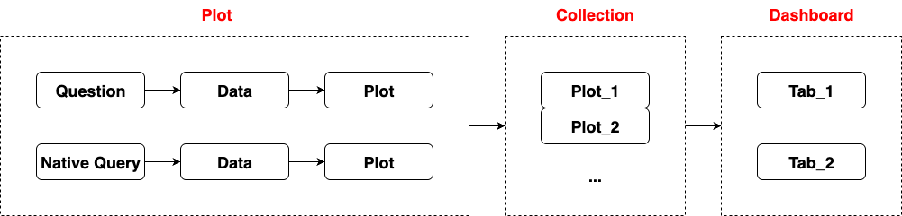

# New -> Question
# Select Data and Add Filter
# Create Plot with Visualization
# Save Plot in Collection
# New -> Native Query
# Select Database and Collection
# Use MongoDB aggregation query
[
{ "$match": { "median_income": { "$gt": 10 } } },
{ "$sort": { "total_rooms": 1 } }
]
# Create Plot with Visualization
# Save Plot in Collection
{
"surveyName": 1 # 1 for an ascending and -1 for a descending index
}
# Select a datbase
# Click X-ray this table of a specific table
# New -> Dashboard
# Add Charts from Collection
# Add Filters